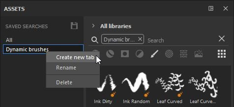
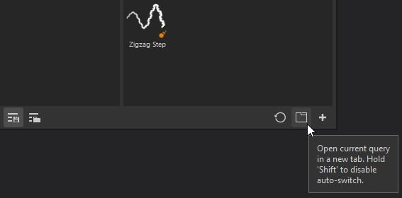

A sub-library is a new tab or window in Substance 3D Painter dedicated to a specific search.
There is no sub-library tab open by default, only the main Assets window. You can create sub-library tabs from the main Assets window using two methods:


Creating a sub-library will automatically create a new tab and dock it in the interface within the same space as the main Assets window.
From there, the sub-library window can be docked anywhere else or left free-floating anywhere in the interface or on another screen.